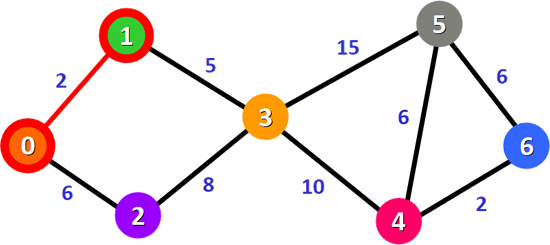
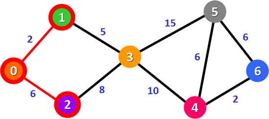
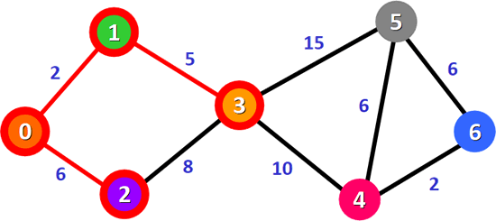
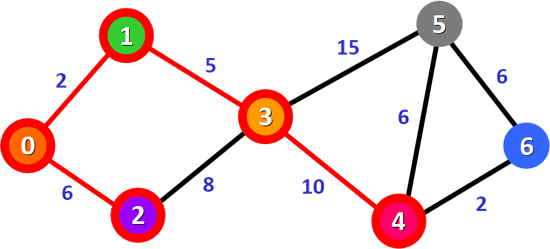
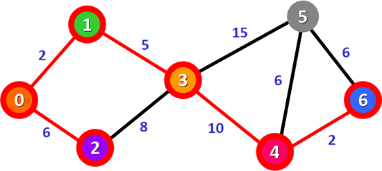
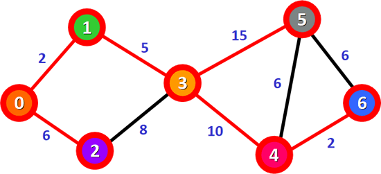

迪杰斯特拉算法（求最短路径）
迪杰斯特拉算法用于查找图中某个顶点到其它所有顶点的最短路径，该算法既适用于无向加权图，也适用于有向加权图。
注意，使用迪杰斯特拉算法查找最短路径时，必须保证图中所有边的权值为非负数，否则查找过程很容易出错。

图 1 无向加权图
假设用迪杰斯特拉算法查找从顶点 0 到其它顶点的最短路径，具体过程是：
1) 统计从顶点 0 直达其它顶点的权值，如下表所示：
3) 找到最短路径 0-1 后，沿 0-1 路径方向查找更短的到达其它顶点的路径，并对表 1 进行更新。
4) 重复之前的操作，沿 0-2 路径方向查找更短的到达其它顶点的路径。遗憾地是，从顶点 2 只能到达顶点 3，且 0-2-3 的总权值比表 2 中记录的 0-1-3 更大，因此表 2 中记录的数据维持不变。
5) 表 3 中，总权值最小的是 0-1-3，它也是顶点 0 到顶点 3 的最短路径。
沿 0-1-3 路径方向，查找到其它顶点更短的路径并更新表 3。更新后的表格为：
6) 表 4 中，总权值最小的是 0-1-3-4，它是顶点 0 到顶点 4 的最短路径。
从顶点 4 出发，查找顶点 0 到其它顶点更短的路径并更新表 4。更新后的表格为：
7) 表 5 中，总权值最小的路径是 0-1-3-4-6，它是顶点 0 到顶点 6 的最短路径。
8) 从图 6 可以看到，只剩下顶点 0 到顶点 5 的最短路径尚未确定。从顶点 6 出发到达顶点 5 的路径是 0-1-3-4-6-5，对应的总权值为 25，大于表 5 中记录的 0-1-3-5 路径，因此 0-1-3-5 是顶点 0 到顶点 5 的最短路径。
由此借助迪杰斯特拉算法，我们找出了顶点 0 到其它所有顶点的最短路径，如下表所示：
仍以图 1 为例，迪杰斯特拉算法查找顶点 0 到其它顶点所有最短路径的 C 语言程序为：
迪杰斯特拉算法查找顶点 0 到其它顶点所有最短路径的 Java 程序为：
迪杰斯特拉算法查找顶点 0 到其它顶点所有最短路径的 Python 程序为：
以上程序的执行过程为：
注意，使用迪杰斯特拉算法查找最短路径时，必须保证图中所有边的权值为非负数，否则查找过程很容易出错。
迪杰斯特拉算法的实现思路
图 1 是一个无向加权图，我们就以此图为例，给大家讲解迪杰斯特拉算法的实现思路。图 1 无向加权图
假设用迪杰斯特拉算法查找从顶点 0 到其它顶点的最短路径，具体过程是：
1) 统计从顶点 0 直达其它顶点的权值，如下表所示：
| 1 | 2 | 3 | 4 | 5 | 6 | |
|---|---|---|---|---|---|---|
| 总权值 | 2 | 6 | ∞ | ∞ | ∞ | ∞ |
| 路径 | 0-1 | 0-2 | 0-3 | 0-4 | 0-5 | 0-6 |
2) 表 1 中，权值最小的是 0-1 路径，它也是从顶点 0 到顶点 1 的最短路径（如图 2 所示）。原因很简单，从顶点 0 出发一共只有 0-1 和 0-2 两条路径，0-2 的权值本就比 0-1 大，所以从 0-2 出发不可能找得到比 0-1 权值更小的路径。∞ 表示两个顶点之间无法直达，对应的权值为无穷大。

图 2 最短路径 0-1
图 2 最短路径 0-1
3) 找到最短路径 0-1 后，沿 0-1 路径方向查找更短的到达其它顶点的路径，并对表 1 进行更新。
| 1 | 2 | 3 | 4 | 5 | 6 | |
|---|---|---|---|---|---|---|
| 总权值 | 2 | 6 | 2+5 | ∞ | ∞ | ∞ |
| 路径 | 0-1 | 0-2 | 0-1-3 | 0-4 | 0-5 | 0-6 |
更新后的表格如表 2 所示，沿 0-1 路径可以到达顶点 3，且 0-1-3 的总权值比 0-3 更小。表 2 中，总权值最小的路径是 0-2，它也是从顶点 0 到顶点 2 的最短路径，如下图所示。绿色加粗的权值是已确认为最短路径的权值，后续选择总权值最小的路径时不再重复选择；红色加粗的权值为刚刚更新的权值。

图 3 最短路径 0-2
图 3 最短路径 0-2
4) 重复之前的操作，沿 0-2 路径方向查找更短的到达其它顶点的路径。遗憾地是，从顶点 2 只能到达顶点 3，且 0-2-3 的总权值比表 2 中记录的 0-1-3 更大，因此表 2 中记录的数据维持不变。
| 1 | 2 | 3 | 4 | 5 | 6 | |
|---|---|---|---|---|---|---|
| 总权值 | 2 | 6 | 7 | ∞ | ∞ | ∞ |
| 路径 | 0-1 | 0-2 | 0-1-3 | 0-4 | 0-5 | 0-6 |
5) 表 3 中，总权值最小的是 0-1-3，它也是顶点 0 到顶点 3 的最短路径。

图 4 最短路径 0-1-3
图 4 最短路径 0-1-3
沿 0-1-3 路径方向，查找到其它顶点更短的路径并更新表 3。更新后的表格为：
| 1 | 2 | 3 | 4 | 5 | 6 | |
|---|---|---|---|---|---|---|
| 总权值 | 2 | 6 | 7 | 7+10 | 7+15 | ∞ |
| 路径 | 0-1 | 0-2 | 0-1-3 | 0-1-3-4 | 0-1-3-5 | 0-6 |
6) 表 4 中，总权值最小的是 0-1-3-4，它是顶点 0 到顶点 4 的最短路径。

图 5 最短路径 0-1-3-4
图 5 最短路径 0-1-3-4
从顶点 4 出发，查找顶点 0 到其它顶点更短的路径并更新表 4。更新后的表格为：
| 1 | 2 | 3 | 4 | 5 | 6 | |
|---|---|---|---|---|---|---|
| 总权值 | 2 | 6 | 7 | 17 | 22 | 17+2 |
| 路径 | 0-1 | 0-2 | 0-1-3 | 0-1-3-4 | 0-1-3-5 | 0-1-3-4-6 |
7) 表 5 中，总权值最小的路径是 0-1-3-4-6，它是顶点 0 到顶点 6 的最短路径。

图 6 最短路径 0-1-3-4-6
图 6 最短路径 0-1-3-4-6
8) 从图 6 可以看到，只剩下顶点 0 到顶点 5 的最短路径尚未确定。从顶点 6 出发到达顶点 5 的路径是 0-1-3-4-6-5，对应的总权值为 25，大于表 5 中记录的 0-1-3-5 路径，因此 0-1-3-5 是顶点 0 到顶点 5 的最短路径。

图 7 最短路径 0-1-3-5
图 7 最短路径 0-1-3-5
由此借助迪杰斯特拉算法，我们找出了顶点 0 到其它所有顶点的最短路径，如下表所示：
| 1 | 2 | 3 | 4 | 5 | 6 | |
|---|---|---|---|---|---|---|
| 总权值 | 2 | 6 | 7 | 17 | 22 | 19 |
| 路径 | 0-1 | 0-2 | 0-1-3 | 0-1-3-4 | 0-1-3-5 | 0-1-3-4-6 |
迪杰斯特拉算法的具体实现
了解了迪杰斯特拉算法的实现过程之后，接下来分别编写 C、Java 和 Python 程序真正地实现迪杰斯特拉算法。仍以图 1 为例，迪杰斯特拉算法查找顶点 0 到其它顶点所有最短路径的 C 语言程序为：
#include <stdio.h>
#define V 20 //顶点的最大个数
#define INFINITY 65535
typedef struct {
int vexs[V]; //存储图中顶点数据
int arcs[V][V]; //二维数组，记录顶点之间的关系
int vexnum, arcnum; //记录图的顶点数和弧（边）数
}MGraph;
//根据顶点本身数据，判断出顶点在二维数组中的位置
int LocateVex(MGraph * G, int v) {
int i = 0;
//遍历一维数组，找到变量v
for (; i < G->vexnum; i++) {
if (G->vexs[i] == v) {
break;
}
}
//如果找不到，输出提示语句，返回-1
if (i > G->vexnum) {
printf("no such vertex.\n");
return -1;
}
return i;
}
//构造无向有权图
void CreateDG(MGraph *G) {
printf("输入图的顶点数和边数：");
scanf("%d %d", &(G->vexnum), &(G->arcnum));
printf("输入各个顶点：");
for (int i = 0; i < G->vexnum; i++) {
scanf("%d", &(G->vexs[i]));
}
for (int i = 0; i < G->vexnum; i++) {
for (int j = 0; j < G->vexnum; j++) {
G->arcs[i][j] = INFINITY;
}
}
printf("输入各个边的数据：\n");
for (int i = 0; i < G->arcnum; i++) {
int v1, v2, w;
scanf("%d %d %d", &v1, &v2, &w);
int n = LocateVex(G, v1);
int m = LocateVex(G, v2);
if (m == -1 || n == -1) {
return;
}
G->arcs[n][m] = w;
G->arcs[m][n] = w;
}
}
//迪杰斯特拉算法，v0表示有向网中起始点所在数组中的下标
void Dijkstra_minTree(MGraph G, int v0, int p[V], int D[V]) {
int final[V];//为各个顶点配置一个标记值，用于确认该顶点是否已经找到最短路径
//对各数组进行初始化
for (int v = 0; v < G.vexnum; v++) {
final[v] = 0;
D[v] = G.arcs[v0][v];
p[v] = 0;
}
//由于以v0位下标的顶点为起始点，所以不用再判断
D[v0] = 0;
final[v0] = 1;
int k = 0;
for (int i = 0; i < G.vexnum; i++) {
int min = INFINITY;
//选择到各顶点权值最小的顶点，即为本次能确定最短路径的顶点
for (int w = 0; w < G.vexnum; w++) {
if (!final[w]) {
if (D[w] < min) {
k = w;
min = D[w];
}
}
}
//设置该顶点的标志位为1，避免下次重复判断
final[k] = 1;
//对v0到各顶点的权值进行更新
for (int w = 0; w < G.vexnum; w++) {
if (!final[w] && (min + G.arcs[k][w] < D[w])) {
D[w] = min + G.arcs[k][w];
p[w] = k;//记录各个最短路径上存在的顶点
}
}
}
}
int main() {
MGraph G;
CreateDG(&G);
int P[V] = { 0 }; // 记录顶点 0 到各个顶点的最短的路径
int D[V] = { 0 }; // 记录顶点 0 到各个顶点的总权值
Dijkstra_minTree(G, 0, P, D);
printf("最短路径为：\n");
for (int i = 1; i < G.vexnum; i++) {
printf("%d - %d的最短路径中的顶点有：", i, 0);
printf(" %d-", i);
int j = i;
//由于每一段最短路径上都记录着经过的顶点，所以采用嵌套的方式输出即可得到各个最短路径上的所有顶点
while (P[j] != 0) {
printf("%d-", P[j]);
j = P[j];
}
printf("0\n");
}
printf("源点到各顶点的最短路径长度为:\n");
for (int i = 1; i < G.vexnum; i++) {
printf("%d - %d : %d \n", G.vexs[0], G.vexs[i], D[i]);
}
return 0;
}
迪杰斯特拉算法查找顶点 0 到其它顶点所有最短路径的 Java 程序为：
import java.util.Scanner;
public class Dijkstra {
static int V = 9; // 图中边的数量
public static class MGraph {
int[] vexs = new int[V]; // 存储图中顶点数据
int[][] arcs = new int[V][V]; // 二维数组，记录顶点之间的关系
int vexnum, arcnum; // 记录图的顶点数和弧（边）数
}
public static int LocateVex(MGraph G, int V) {
int i = 0;
// 遍历一维数组，找到变量v
for (; i < G.vexnum; i++) {
if (G.vexs[i] == V) {
break;
}
}
// 如果找不到，输出提示语句，返回-1
if (i > G.vexnum) {
System.out.println("顶点输入有误");
return -1;
}
return i;
}
// 构造无向有权图
public static void CreatDG(MGraph G) {
Scanner scn = new Scanner(System.in);
System.out.print("输入图的顶点数和边数：");
G.vexnum = scn.nextInt();
G.arcnum = scn.nextInt();
System.out.print("输入各个顶点：");
for (int i = 0; i < G.vexnum; i++) {
G.vexs[i] = scn.nextInt();
}
for (int i = 0; i < G.vexnum; i++) {
for (int j = 0; j < G.vexnum; j++) {
G.arcs[i][j] = 65535;
}
}
System.out.println("输入各个边的数据:");
for (int i = 0; i < G.arcnum; i++) {
int v1 = scn.nextInt();
int v2 = scn.nextInt();
int w = scn.nextInt();
int n = LocateVex(G, v1);
int m = LocateVex(G, v2);
if (m == -1 || n == -1) {
return;
}
G.arcs[n][m] = w;
G.arcs[m][n] = w;
}
}
// 迪杰斯特拉算法，v0表示有向网中起始点所在数组中的下标
public static void Dijkstra_minTree(MGraph G, int v0, int[] p, int[] D) {
int[] tab = new int[V]; // 为各个顶点配置一个标记值，用于确认该顶点是否已经找到最短路径
// 对各数组进行初始化
for (int v = 0; v < G.vexnum; v++) {
tab[v] = 0;
D[v] = G.arcs[v0][v];
p[v] = 0;
}
// 由于以v0位下标的顶点为起始点，所以不用再判断
D[v0] = 0;
tab[v0] = 1;
int k = 0;
for (int i = 0; i < G.vexnum; i++) {
int min = 65535;
// 选择到各顶点权值最小的顶点，即为本次能确定最短路径的顶点
for (int w = 0; w < G.vexnum; w++) {
if (tab[w] != 1) {
if (D[w] < min) {
k = w;
min = D[w];
}
}
}
// 设置该顶点的标志位为1，避免下次重复判断
tab[k] = 1;
// 对v0到各顶点的权值进行更新
for (int w = 0; w < G.vexnum; w++) {
if (tab[w] != 1 && (min + G.arcs[k][w] < D[w])) {
D[w] = min + G.arcs[k][w];
p[w] = k;// 记录各个最短路径上存在的顶点
}
}
}
}
public static void main(String[] args) {
MGraph G = new MGraph();
CreatDG(G);
int[] P = new int[V]; // 记录顶点 0 到各个顶点的最短的路径
int[] D = new int[V]; // 记录顶点 0 到各个顶点的总权值
Dijkstra_minTree(G, 0, P, D);
System.out.println("最短路径为：");
for (int i = 1; i < G.vexnum; i++) {
System.out.print(i + " - " + 0 + " 的最短路径中的顶点有：");
System.out.print(i + "-");
int j = i;
// 由于每一段最短路径上都记录着经过的顶点，所以采用嵌套的方式输出即可得到各个最短路径上的所有顶点
while (P[j] != 0) {
System.out.print(P[j] + "-");
j = P[j];
}
System.out.println("0");
}
System.out.println("源点到各顶点的最短路径长度为:");
for (int i = 1; i < G.vexnum; i++) {
System.out.println(G.vexs[0] + " - " + G.vexs[i] + " : " + D[i]);
}
}
}
迪杰斯特拉算法查找顶点 0 到其它顶点所有最短路径的 Python 程序为：
V = 20 #顶点的最大个数
INFINITY = 65535 #设定一个最大值
P = [0]*V # 记录顶点 0 到各个顶点的最短的路径
D = [0]*V # 记录顶点 0 到各个顶点的总权值
class MGraph:
vexs = []*V #存储图中顶点数据
arcs = [[0]*V for i in range(V)] #二维列表，记录顶点之间的关系
vexnum = 0 #记录图的顶点数和弧（边）数
arcnum = 0
G = MGraph()
#根据顶点本身数据，判断出顶点在二维数组中的位置
def LocateVex(G,v):
#遍历一维数组，找到变量v
for i in range(G.vexnum):
if G.vexs[i] == v:
break
#如果找不到，输出提示语句，返回-1
if i>G.vexnum:
print("顶点输入有误")
return -1
return i
#构造无向有权图
def CreateDG(G):
print("输入图的顶点数和边数：",end='')
li = input().split()
G.vexnum = int(li[0])
G.arcnum = int(li[1])
print("输入各个顶点：",end='')
G.vexs = [int(i) for i in input().split()]
for i in range(G.vexnum):
for j in range(G.vexnum):
G.arcs[i][j] = INFINITY
print("输入各个边的数据:")
for i in range(G.arcnum):
li = input().split()
v1 = int(li[0])
v2 = int(li[1])
w = int(li[2])
n = LocateVex(G,v1)
m = LocateVex(G,v2)
if m == -1 or n == -1:
return
G.arcs[n][m] = w
G.arcs[m][n] = w
CreateDG(G)
#迪杰斯特拉算法，v0表示有向网中起始点所在数组中的下标
def Dijkstra_minTree(G,v0,P,D):
#为各个顶点配置一个标记值，用于确认该顶点是否已经找到最短路径
final = [0]*V
#对各数组进行初始化
for i in range(G.vexnum):
D[i] = G.arcs[v0][i]
#由于以v0位下标的顶点为起始点，所以不用再判断
D[v0] = 0
final[v0] = 1
k =0
for i in range(G.vexnum):
low = INFINITY
#选择到各顶点权值最小的顶点，即为本次能确定最短路径的顶点
for w in range(G.vexnum):
if not final[w]:
if D[w] < low:
k = w
low = D[w]
#设置该顶点的标志位为1，避免下次重复判断
final[k] = 1
#对v0到各顶点的权值进行更新
for w in range(G.vexnum):
if not final[w] and (low + G.arcs[k][w]<D[w]):
D[w] = low + G.arcs[k][w]
P[w] = k #记录各个最短路径上存在的顶点
Dijkstra_minTree(G,0,P,D)
print("最短路径为：")
for i in range(1,G.vexnum):
print("%d - %d的最短路径中的顶点有："%(i,0),end='')
print("%d-"%(i),end='')
j = i
#由于每一段最短路径上都记录着经过的顶点，所以采用嵌套的方式输出即可得到各个最短路径上的所有顶点
while P[j] != 0:
print("%d-"%(P[j]),end='')
j = P[j]
print("0")
print("源点到各顶点的最短路径长度为:")
for i in range(1,G.vexnum):
print("%d - %d : %d"%(G.vexs[0], G.vexs[i], D[i]))
以上程序的执行过程为：
输入图的顶点数和边数：7 9
输入各个顶点：0 1 2 3 4 5 6
输入各个边的数据：
0 1 2
0 2 6
1 3 5
2 3 8
3 5 15
3 4 10
4 5 6
4 6 2
5 6 6
最短路径为：
1 - 0的最短路径中的顶点有： 1-0
2 - 0的最短路径中的顶点有： 2-0
3 - 0的最短路径中的顶点有： 3-1-0
4 - 0的最短路径中的顶点有： 4-3-1-0
5 - 0的最短路径中的顶点有： 5-3-1-0
6 - 0的最短路径中的顶点有： 6-4-3-1-0
源点到各顶点的最短路径长度为:
0 - 1 : 2
0 - 2 : 6
0 - 3 : 7
0 - 4 : 17
0 - 5 : 22
0 - 6 : 19
关注公众号「站长严长生」，在手机上阅读所有教程，随时随地都能学习。本公众号由C语言中文网站长亲自运营，长期更新，坚持原创。

微信扫码关注公众号